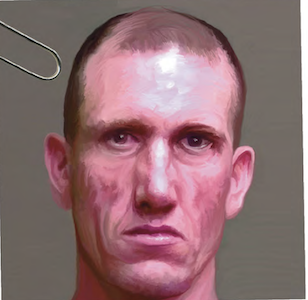
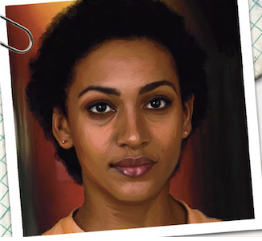
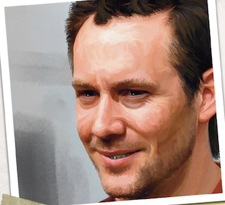
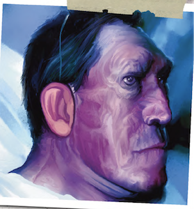
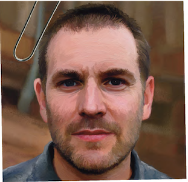
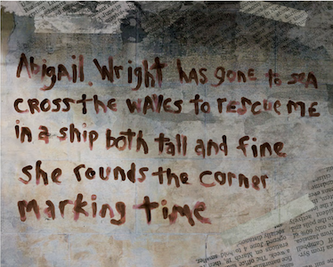
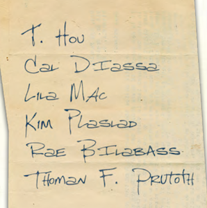

Dr. Richard Dallan
Dallan is a tall, burly, balding Caucasian man
with grey, short, curly hair that has all but vanished
on top, and a long beard and mustache. His glasses
are oversize, black and thick, enlarging his eyes. He
wears suspenders, slacks, and a short-sleeved, button-
down shirt with no tie. Sometimes he wears a Boston
White Sox windbreaker. He always wears sneakers.
His physical presence is intimidating, but his personality
is quiet and respectful. At 2.01 meters, he towers
over his patients, but he is self-deprecating, quiet, and
even-tempered. Within seconds, even those intimidated
by his physical presence find themselves at ease
becaue of the naturally calming nature of his voice.
Dr. Richard Friend
Dr. Friend is a strange, loud little Caucasian man
perpetually dressed in a pinstriped suit. His bald head
and fastidiously kept grey spade beard make him
appear comical. But his insightful, probing questions,
usually followed by a veiled insult, quickly remove the
humor evident in his appearance.
Ed Debevic

Ed Debevic is a huge, violent-looking Caucasian
man. His nose was long ago flattened by some
calamitous injury. His narrow eyes squint at everything.
His two front teeth are missing chunks as if
they were smashed long ago. He carries “Thomas,” a
sawn-down baseball bat shot with a center of lead, in
a loop on his belt.
Nurse Ester Sagamina
Nurse Esther Samigina is a curt, clever, and
soft-spoken woman who appears to have it all under
control. At work, she is always on task and never
seems to rest. She never hesitates. She calls everyone
by their full names. Patients cling to her as a surrogate
mother, though she does not show emotion. No one
has anything but kind things to say about her.
Samigina is broad-faced and dark-haired, has
piercing green eyes, and is meticulous in her appearance.
She wears scrubs during work hours. After hours
she is still often found in them underneath a hoodie or
a pullover. Outside of work, her hair is always bound
up in a hair scrunchie.
Asa Daribondi
Daribondi is a small, dark-haired Caucasian man. He
is unkempt and looks ill, bundled in expensive silk pajamas and slippers. His
eyes have a frantic, lost look. His hands
are raw, waterlogged, and peeling, as if he had been
doing heavy work in the water. He claims to be an architect, have
built the Holden Place, and to have drowned multiple children
Cloris Gareth Vance
Gareth-Vance is a short young woman with wild blue
and blonde hair. Usually she is quiet and self-deprecating
but she suffers from manic delusions of omnipotence.
When these spells strike, she is argumentative
and dismissive, raises her voice, and threatens those
nearby with what limited violence she might be able
to muster. She spends much of her time during the
day making origami sculptures of small animals: dogs,
penguins, and cranes.
David Langford
Langford was born in Jersey City, New Jersey, and attended
DeVry University for trade training in network
systems, electronics, and machinery repair. Soon after
landing a job with NYNEX as a telephone maintenance
engineer at 24, he married and shortly thereafter
divorced his first wife, Beth. When he switched
jobs in 1991 and became a “box man” for Charter
Cable systems at age 38, he married his second wife,
Patty. They divorced in 1993. Langford was a bachelor
who lived alone in an apartment in Staten Island.
Langford was once handsome and garrulous. His
lost time on the Night Floors was cruel. After his
experience he was commited to Dorchester.
Debra Carver

An attractive woman in her early thirties, Carver
confesses readily to being in the “sanatorium” to deal
with her drug problem, but she does not say which
drug. Carver can find and refine Melonia.
Dorothy Yale
Yale is an older, dark-haired woman with a wide,
fish-like face that is always consumed with a guarded,
worried look. She can hear the voices of
the dead through electronic devices. She has an uncanny
ability to know when someone carries electronics,
even if they are concealed.
Ed Wist/Mr. Wilde

Wist, born Ed Miler
Guison, murdered his father, mother, and sister with
a shotgun in 2010, on his 16th birthday. His story is
well known because of his obscene wealth and his
very public trial. The murders are often called the
“Poor Little Rich Boy Murders” in the press. The state
of California convicted Wist of murder, but he successfully
pleaded not guilty by reason of insanity. The
family trust selected the Dorchester House as Wist’s
new home and persuaded the California courts to
send him there. He has lived on the third floor in the
north dorm for one year. He sometimes has trouble
remembering his life before the hospital.
Despite multiple failed lawsuits by far-flung relatives,
in April 2015, on his 21st birthday, Wist came
into possession of his wealth, a trust fund amounting
to hundreds of millions of dollars. Few patients in
Dorchester House know the truth of Wist’s background.
He works hard to be charming and selfdeprecating,
portraying himself as a penniless drudge.
Wist is never without his small, brown leather
notebook, his “reputation book.”
Gary Topchick
Topchick is a thin young man with curly red hair
and bifocal glasses who speaks in a thick New York
accent. He wears hospital pajamas beneath a tweed
jacket.
John Pailotte
Pailotte is a tall, comically thin man with shaggy hair
and close-set eyes. His attitude is artificially jovial.
Wide, recently healed scars can be seen on his wrists.
Pailotte is convinced that this world is not real and
that he is serving time in Hell. Only death can free
him.
Mr Wilde

A Caucasian man of middle age, Wilde has a stunted
build the size of a ten-year-old boy. He has a yellowed
complexion, a deformed head, and a scarred face.
He wears false wax ears over the ruined flaps where
ears once were. Wilde nevertheless projects an air of
physical danger. His arms are thickly muscled and his
agility is obvious from his lithe movements.
Rudolph Valater
Valater is a quiet man of middle age and average build.
Valater suffers from PTSD from his tour in Afghanistan.
He has almost completed his road to recovery,
or at least has reached the point where his acute
depression is gone. In the past few months, however,
Valater has noticed strange “puppets” moving
through the halls.
Timothy Bael

Bael suffered through two tours in Iraq, but soon
found his fears followed him home. He committed
himself, and had been enjoying steady progress until
the forces of the King seized the facility. Now, Bael is
somehow the master and creator of classical demonology,
which the forces of the King have somehow
seeded for him throughout history.
Bael is a thickly muscled Caucasian man with
crew-cut short blond hair fading to grey at the temples.
He wears a thick, woolen robe, but beneath it,
his body is covered in tattoos, including one of Mr.
Toad and the Cheshire Cat on his neck. He is never
without his battered, wire-bound, red notebook.
Agent Exeter

A 60-something African-American man. Exeter smells of
body odor, oil, and gasoline. When he moves, there is
a subtle noise of crumpling paper. He is
gaunt, moves slowly, appears ill, has a flat affect,
rarely engages in eye contact, and tends to speak in
straightforward sentences.
Elias Barbas
"Find Elias Barbas but whatever you do don't trust him" - Micheal Witwer
Micheal Witwer AKA Agent Vega
DEA and Delta Green Agent. Somehow both in Holden in 1995 and 2015 in Dorchester (Despite being only 35).
"It's too late to save me but it's not too late to save yourselves"
Abagail Wright
Artist. Disappeared from the Holden in 1995.
Abagail Wright

The Message
A photo of lines written on the wall of a mental patient’s room. It was scrawled on the wall in a copious
amount of human blood, covered with taped newspapers.
Abigail Wright has gone to sea
cross the waves to rescue me
in a ship both tall and fine
she rounds the corner marking time
Dr. Dallan's Business Card
List of Missing Agents

Her Grey Song
Play from 1969. Last known location of Fiona's Dad
A Song Before Travel
Indie movie from 2001. Seen by Chris's parents right before they drove off a bridge.